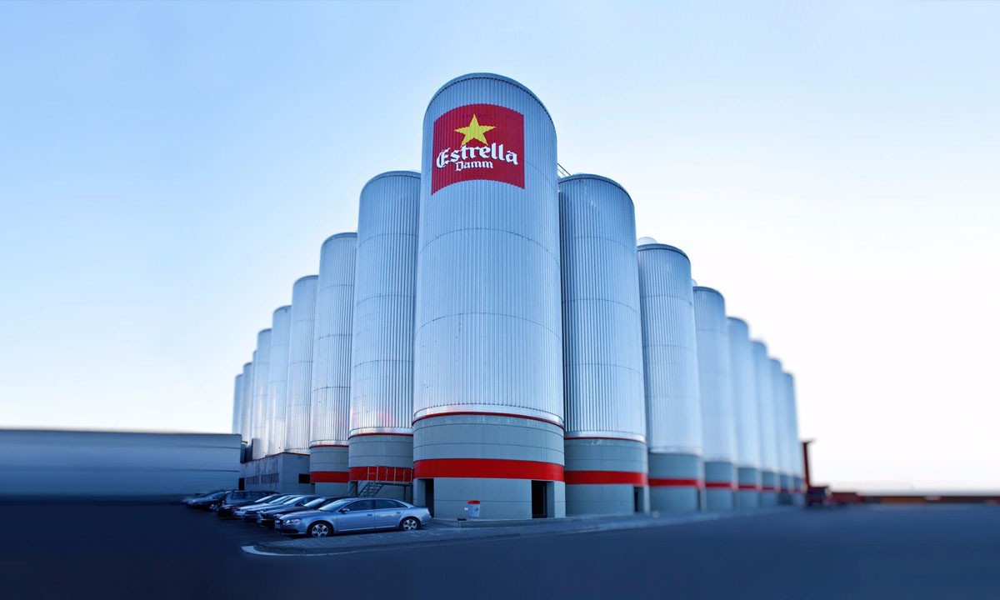
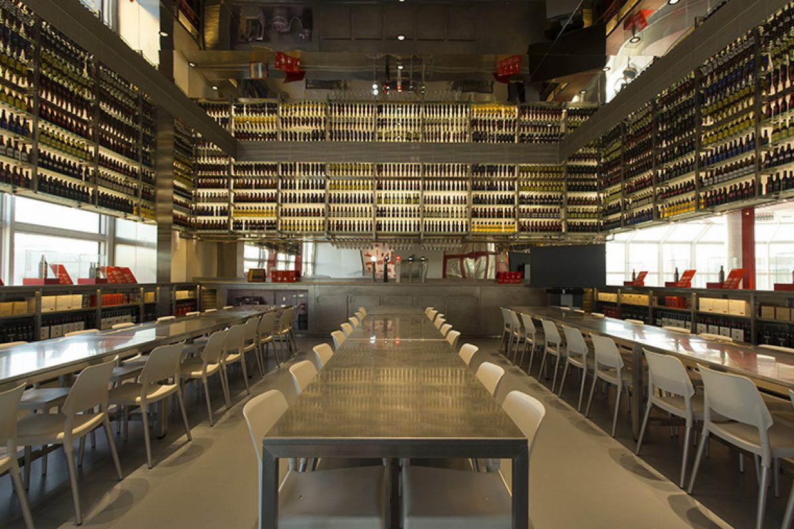
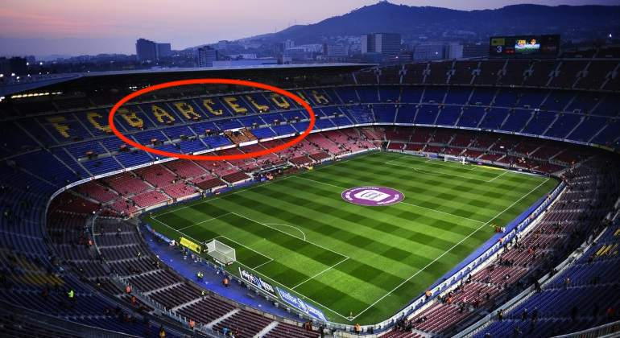

BARCELONA GROUP
METATOUR
May 16th to May 18th, 2020
ACCOMODATION
Alternative Hotels
H10 Metropolitan
The Corner Hotel
TIMELINE AND PROGRAM
DAY 1 - May 16th, 2020
Activity - Estrella Damm brewery
Calculating the arrival time by 15:00 - 16:00. Cutting Edge Events staff will welcome the group at Barcelona airport and will scort the group to the first activity, a visit to the most well-known catalan beer, Estrella Damm factory. As the group will have a bus at disposal for the activity, guests will keep the luggage inside the bus trunk.
Estrella Damm factory is just 10 minutes form Barcelona airport, and the visit will take about 1h30 - 2h.
- Location El Prat del Llobregat
- Duration 2 hours aprox
- Capacity Minimum 8pax - maximum 50pax
- Included Bus, guided visit, beer tasting.
Once the activity has finished, guests will go directly to the hotel to check in.


Dinner - Alba Granados
The first dinner of the trip will be at Alba Granados. This restaurant is located in a walking distance from the hotel, as there are only 10 minutes by walking.
DAY 2 - 17th May, 2020
During the second day in the morning the group will enjoy of their free time in Barcelona. Shopping, walking, visiting museums… Guests will have time till 13:00 to do whatever they want.
Lunch - Flamant
Lunch time will be by 13:00.
Activity - Barça’s game
Figuring out that the game starts at 18:00, we should leave the hotel by 16:30 aproximately, as it turns into a really busy zone when Barcça’s games. If the lunch ends at 15:00 aprox, we will go first to the hotel for a quick fresh up or resting few minutes before gogin to the stadium. At 16:30 the bus will be waiting in font of the hotel to pick up the group and go directly to the stadium.

This will be the zone where guests will be located

After the game, the bus will be waiting out of the stadium, just few meters away from the entrance door. A member of Cutting Edge Events will meet the group outside and will scrot thm from the stadium to the bus. As it will be late, we will go directly to the restaurant as it will be dinner time already (20:00 aproximately). Booking will be at 21:00 as it is really difficult leaving the stadium zone by bus (because of traffic)
Dinner - Julivert Meu
The restaurant we suggest for dinner is Julivert Meu. Located also in a walking distance from the hotel, at Oldtown district of thte city, is only 5 minutes by walking.
DAY 3 - 18th May, 2020
Activity - E-bike tour and Winery visit
On the last day we suggest an e-bike tour along the coastline of barcelona finishing at Boquet D’Alella winery, a familiar winery located in Alella, small town 15km from Barcelona. Guests will bring their luggage to the bike shop, as they will bring it out to the winery later. Once they have finished with the activity, a bus will come to the winery to pick up the group and take them to the airport.
- Location Barcelona - Alella
- Duration 5 hours aprox
- Capacity Minimum 8pax - maximum 50pax
- Included E-bike tour, guided visit, wine tasting, lunch at winery and bus transfer to the airport .
When the group arrives to Alella, they will visit this small and familiar winery. They will enjoy of the views of Alella, which is a really small town but with a good living atmosphere. after the visit they will finish the acitvity having a picnic lunch outside (if weather allows us)!

Once they’ve finished the bus will pick them up and they will go to the airport for the flight departure.

Budget
Terms & Conditions
Restaurant rates are valid for 2019, it is possible to suffer small changes.
Rates valid for a group of 40 pax.
Cutting Edge Events management fee including in the detailed rates
VAT included.
No reservation has been done. Availability upon request.
Amaze your clients!!
Didn’t you just love our presentation ? Our first goal here at Cutting Edge Events is to help you win this business. You will most likely now collate the information contained in this website and make your own presentation to show your client
Why not leverage our technology, and present your client with the same format ? As a totally free service, we offer you the possibility of doing the work for you
We will:
- Follow your instructions to add anything you want to be in your presentation, and delete anything that you don’t consider relevant
- Include your logo and company details, and remove all our company details
- We can even change some colors to mimic your corporate identity
- We will send you the new link, and it will look as if it was your work